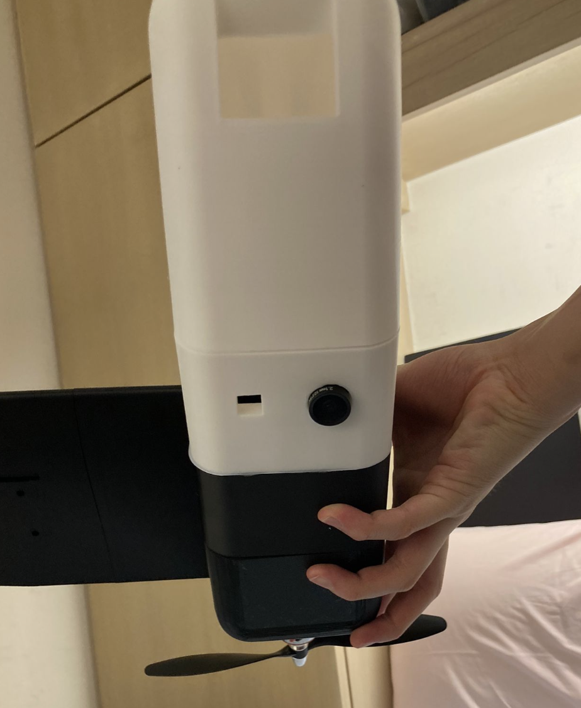
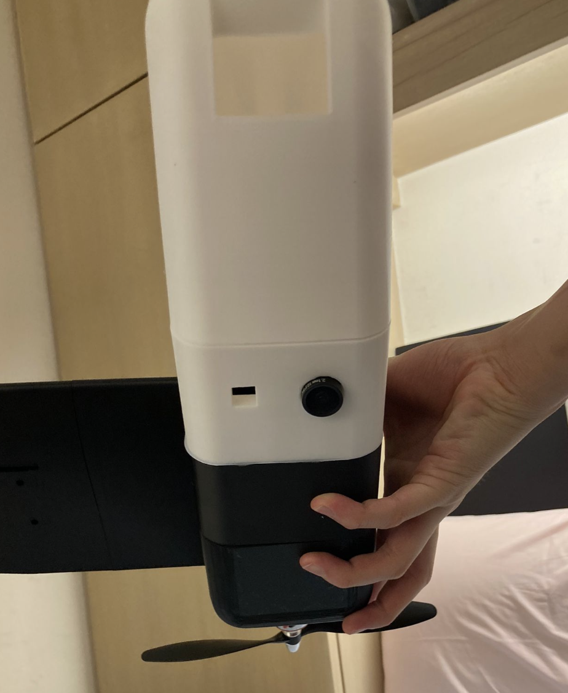

Flying Wing (Dec 2025 – Present)
Preliminary Design
Fully 3D-printed 1 kg flying-wing UAV with geometry optimized for efficient cruising at 30+ km/h. Performed a set of batch Reynolds number sweeps in XFLR5 for various airfoils used in flying wings. A range of Re = 2,000–3,000,000 was used. This is admittedly a much wider range than neccessary for RC aircraft; which usually fly in the regime of Re = 50,000-500,000, but I wanted to have as much data as possible just in case. A setup involving a MH60 root airfoil with PW51 wingtips was chosen based on resulting data. 3° of wingtip washout was incorporated to reduce tip stall risk and improve dynamic stability across the 90 cm wingspan. aAV-tail configuration was adopted to reduce parasitic drag while maintaining control authority.

CAD
Designed the full airframe and internal layout in SolidWorks, including modular avionics mounting, serviceable wiring routes, a ram-air duct for ESC cooling and structural features for future payload expansion. For structural purposes and ease of assembly, I used 20mm diameter carbon fibre tubes to string all the 3d-printed sections together. In terms of material properties, LW-PLA was used for most structural components with targeted PETG reinforcement near thermally sensitive areas such as the ESC mount. Additional print trials were done to figure out filament shrinkage as to keep all fits and tolerances appropriate. For example, a press fit was needed for the ducted fan mounting as to keep it mounted as securely as possible.
Analysis
Conducted aerodynamic stability analysis in XFLR5, tuning washout, sweep, and dihedral to achieve strong modal behavior (short-period ζ = 0.372, phugoid ζ = 0.231). Evaluated lateral dynamics, balancing roll subsidence, spiral divergence, and Dutch roll tradeoffs. Used ANSYS for comparative drag studies and structural validation. Structural optimization using LW-PLA reduced overall mass by 48%, while PETG reinforcement reduced ESC thermal warping by 78%. A rudimentary ESP32-based flight controller using IMU angular-rate feedback provides attitude stabilization and a platform for future autonomy work.

Fixed-Wing Long-Range Platform V2 (Oct 2024 – Jan 2025)
Preliminary Design
Designed as a long-endurance fixed-wing V-tail platform using conventional RC design principles. Without access to CFD tools at the time, I built a small laminar-flow wind tunnel to collect comparative airfoil data and generate basic polars for lift versus angle of attack and airspeed. Simplified analysis assumed laminar, inviscid flow to make the problem tractable given my experience at the time.
CAD
Modeled structural layout and avionics integration in CAD, focusing on manufacturability using laser-cut balsa ribs, carbon-fiber spars, and selective 3D-printed PLA and LW-PLA components. LW-PLA was used sparingly due to cost and time constraints. The platform included onboard FPV, low-resolution infrared sensing for urban heat mapping experiments, and distributed flight-control logic using Arduino Uno/Nano devices in a simple master–slave architecture.
 

Fixed-Wing Long-Range Platform V1 (Nov 2023 – Feb 2024)
Preliminary Design
First complete fixed-wing UAV built entirely from balsa wood before I had access to a 3D printer. Designed using standard RC aircraft heuristics for stability, control authority, and endurance. The aircraft was configured for FPV flight using a lightweight analog camera system and long-range radio transmission.

CAD
Basic CAD used primarily for visualization and dimensional planning rather than full structural optimization. Electronics were minimal and focused on achieving reliable video transmission. A 512 MHz radio system was selected due to operation in dense urban environments (Hong Kong), where signal obstruction and multipath interference were significant constraints.